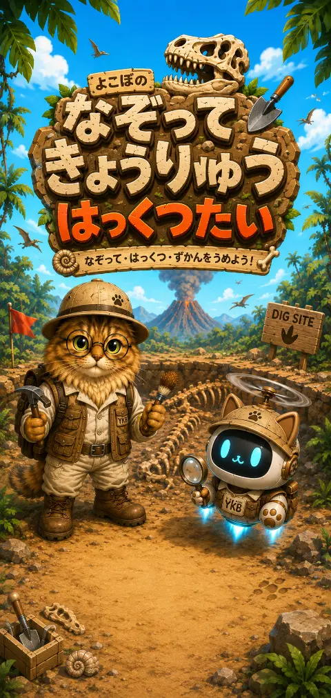
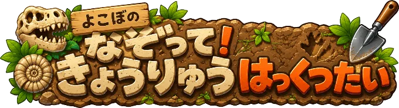
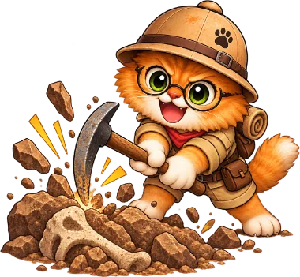
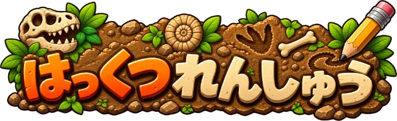
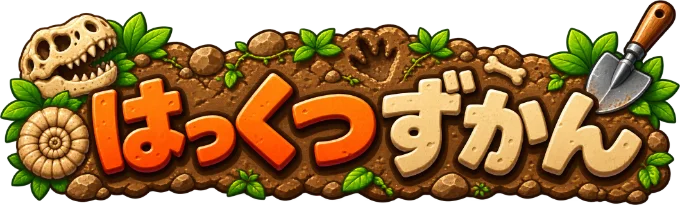
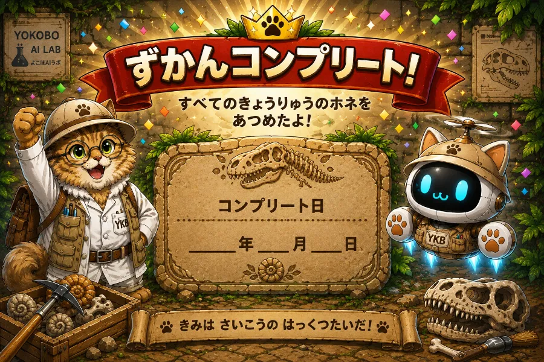

もじの かたち: KanjiVG (CC BY-SA 3.0) ／ こえ: VOICEVOX:春歌ナナ

おうちのひとと もじを えらんで 3かい なぞろう
1もじ 3かい なぞると おわりホネは もらえないよ
このアプリは「よこぼのAIラボ」で作っています。実験室では、ほかにも遊べるものを公開しています。
集めたホネと★を全部消します。もとには戻せません。


おしたら おおきく みえるよ
つくったところ：よこぼのAIラボ 実験室 ↗
おすと とじるよ